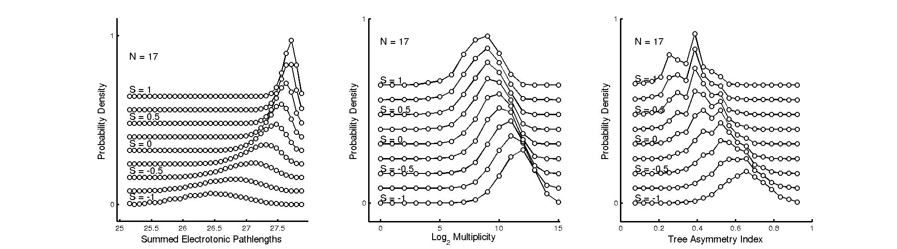
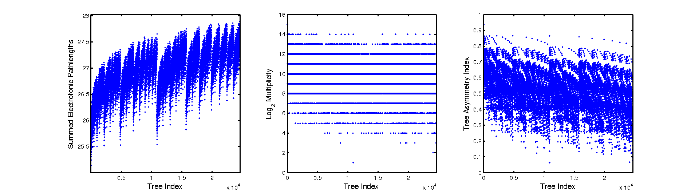
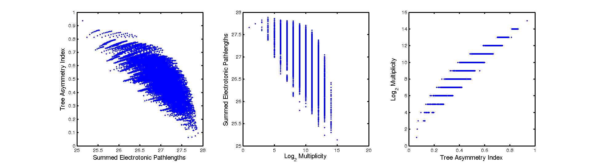

This is the readme for the numerical evaluation of the models
associated with the paper:
Ronald A.J. van Elburg, `Stochastic Continuous Time Neurite Branching
Models with Tree and Segment Dependent Rates' Journal of Theoretical
Biology, Volume 276, Issue 1, 7 May 2011, p 159-173,
doi:10.1016/j.jtbi.2011.01.039
preprint available at: http://arxiv.org/abs/1010.0605
email: RonaldAJ(at)vanelburg.eu
Files for BE-model:
plotBEModelCurves.m
cBEModel.m
Files for S-model:
Main C++ code:
SDependenceCalculator.cpp
SDependenceCalculator.h
C++ - Matlab interface:
ObjectHandle.h % by Tim Bailey 2004 who adapted it from a
design by Mike Stevens.
mexSDependenceCalculator.cpp
mexSDependenceCalculator.mexglx
Matlab code:
SDependenceCalculation.m % Compiles C++ and mex-code and calculates
% and stores data for S-model
SDependenciesPlot.m % Displays data calculated with
% SDependenceCalculation
Additional folders:
figures % location where figures are stored
mat-files % location where large datasets from S-model are stored
mexhandle % Complete ObjectHandle.h code,readme and examples % by
Tim Bailey 2004 who adapted it from a design by Mike
Stevens.
Reproducing figures from the paper:
Figure 1 (BE-model):
- Start matlab
- run plotBEModelCurves.m from Matlab
A row from Figure 3 (S-model):

- Start matlab
- IF AVAILABLE
download S-model data: http://www.ai.rug.nl/~elburg/SDC.tar
unpack with tar -xf and put the SDC* files into the mat-files directory
ELSE
run SDependenceCalculation.m (this takes about half an hour)
- run SDependenciesPlot.m (gives top row of figure 3)
- set N=17; on line 5 of SDependenciesPlot.m (N specifies
the number of terminal segments)
- run SDependenciesPlot.m (gives middle row of figure 3)
- set N=23; on line 5 of SDependenciesPlot.m
- run SDependenciesPlot.m (gives bottom row of figure 3)
Figure 2 comes with creating figure 3. In this figure you find summed
electronic pathlength, tree asymmetry index and log_2 multiplicity plotted
versus tree index (using the Harding enumeration discussed in the manuscript.)

Extra Figure 4 comes with creating figure 3. In this figure you find a
comparison of summed electronic pathlength, tree asymmetry index and
log_2 multiplicity.

In SDependenceCalculation we see calls to mexSDependenceCalculator
with as argument a handle (SDCHandle), a letter and an integer
uint32(NRange(N)) or double double(SRange(S)). The use of the
functions uint32 and double is necesary to provide the correct
arguments to the C++ code. The handle is a handle to the C++ object
in which all data at the current S value is stored. The letter
specifies the action:
'N' : set the maximum number of terminal segments to be evaluated
'S' : set S
'P' : calculate probilities at the current S values
'A' : Give for each tree the asymmetry index
'C' : Get number of trees
'E' : Give for each tree the summed Electronic path length index
'H' : Give for each tree the log of the number of histories
'M' : Give for each tree the multiplicity of a tree
'D' : Delete all data from the C++-object referenced by the handle
The argument uint32(NRange(N)) specifies for 'P', 'A', 'C','E','H','M'
at which number of terminal segments we want to evaluate teh
corresponding quantities.
For 'N' it specifies the maximum number of terminal segments for which
we want to construct trees. For 'S' we see double(SRange(S)) instead
of uint32(NRange(N)) this double specifies the values of S at which we
want to evaluate probabilities calculated with a call using 'P'.
These letters are also used for the corresponding variables in
SDependenceCalculation.m and SDependenciesPlot.m and the mat files in
which these variables are stored.